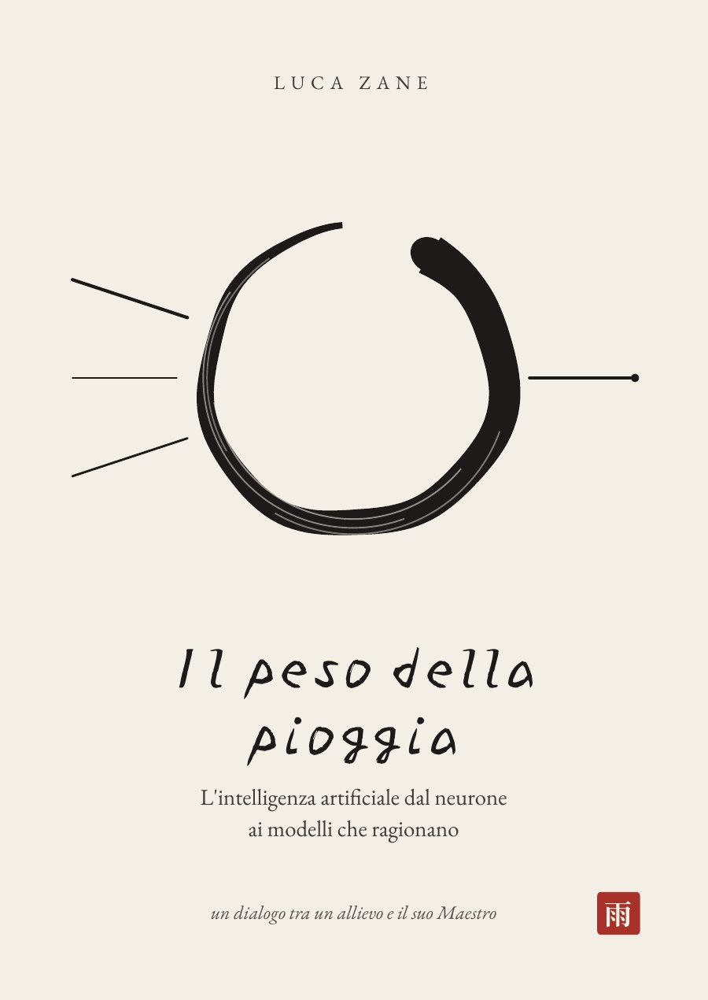

Luca Zane
Il peso della pioggia
L'intelligenza artificiale dal neurone ai modelli che ragionano.
Un dialogo tra un allievo e il suo Maestro.
Versione 2.0 · 17 novembre 2026 · gratuito · 316 pagine A4
Il libro
Il libro è un dialogo tra un allievo e un Maestro, in un dojo di karate affacciato sul mare. Nel dojo si impara ripetendo, sbagliando e correggendo, un gesto alla volta: è così che impara una rete. In mare si naviga con strumenti precisi dentro un mondo che non lo è: il vento si legge ma non si comanda, il tempo si prevede solo per qualche giorno, e non ci si fida mai di un solo strumento: è così che si usa un modello.
Soprattutto teorie consolidate: il neurone, l'allenamento, le reti che guardano e che leggono, gli embedding, i Transformer, i modelli di linguaggio e il modo in cui vengono educati e serviti. Sono le idee che non cambiano ogni sei mesi, e sono quelle che servono per capire le nuove. La promessa è questa: alla fine saprete prendere qualsiasi annuncio e chiedervi in quale lezione cade, quale problema risolve, a quale prezzo, e se è sostanza o rumore.
A chi è rivolto
Il dojo è aperto a tutti: etichette e titoli di studio restano fuori, come le scarpe sulla soglia.
Penso che servirà soprattutto a chi usa l'intelligenza artificiale ogni giorno, per lavoro o per curiosità, sente di averne in testa solo slogan confusi e non vuole fermarsi alla superficie: sviluppatori, ingegneri, analisti, chi guida progetti tecnici, studenti, curiosi con il gusto della logica. Con un po' di pazienza si capiscono tante cose anche da principianti.
Il percorso
Si va per cinture, due lezioni ciascuna, dalla bianca alla nera. Dopo alcune cinture c'è un intermezzo: un'uscita dal dojo per mettere alla prova ciò che si sa.
- Bianca · 1–2il neurone, i pesi, le reti a strati
- Gialla · 3–4come una rete impara e come generalizza
- Intermezzol'attrezzeria: PyTorch, JAX, TensorFlow
- Arancione · 5–6le architetture storiche: CNN e RNN
- Intermezzola veglia in porto: contesto, allucinazioni, consiglio di modelli
- Verde · 7–8embedding, attention e Transformer
- Blu · 9–10gli LLM: pretraining e post-training
- Intermezzola prima guardia: scrivere la pagina, provarla, risparmiare dove conta
- Marrone · 11–12inferenza efficiente e ragionamento
- Intermezzopiccolo cabotaggio: un modello sul proprio computer
- Nera · 13–14le altre famiglie di modelli e la costruzione di prodotti